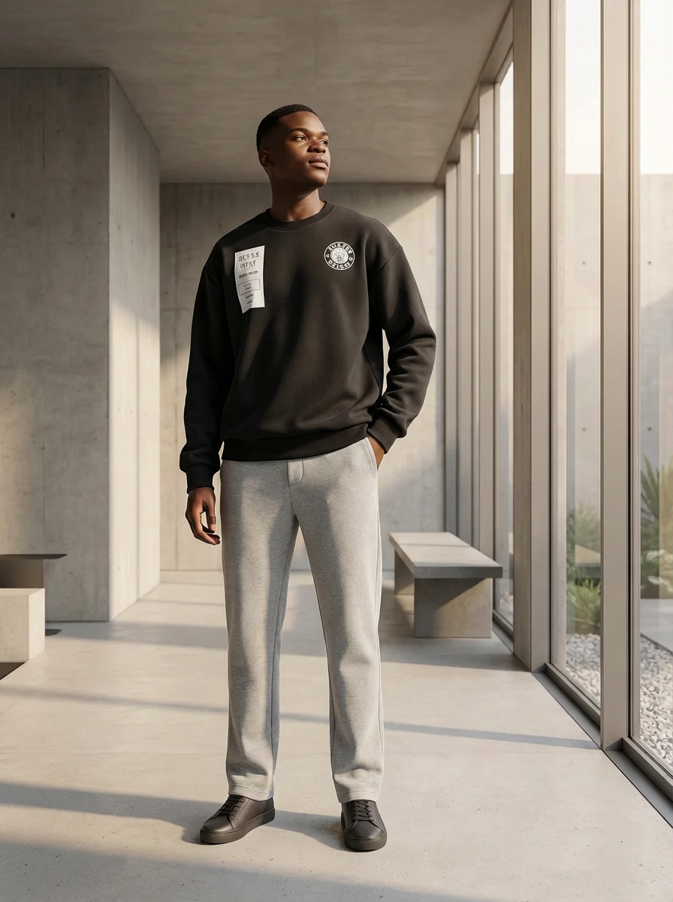
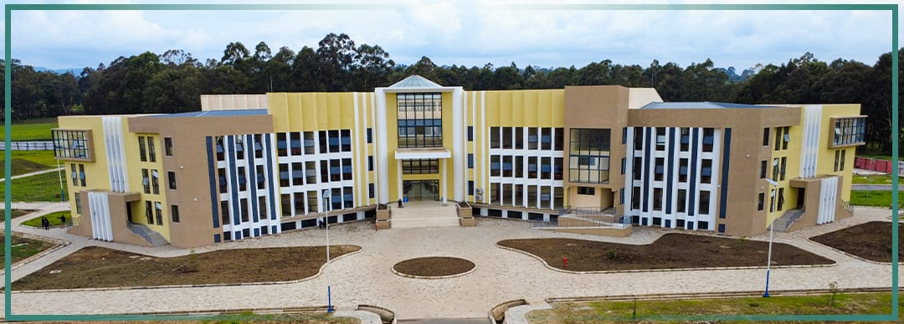
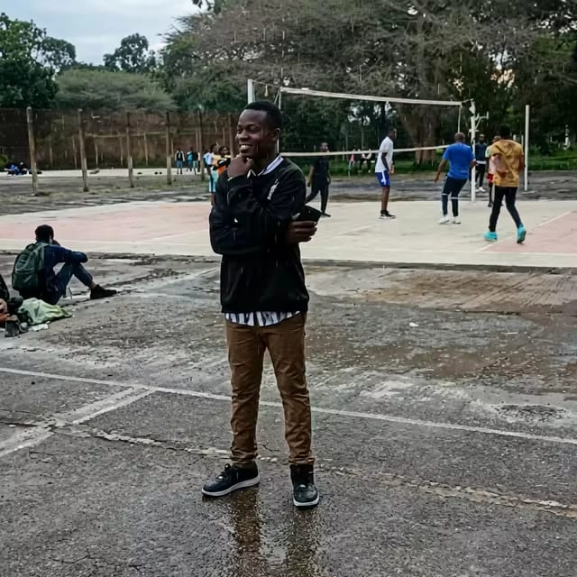

Short historical background of mister raymond
Place of born and parents
he was born in kagera region ,tanzania. His parents are both retired primary school teachers,
his fathers name Mr Ladislaus Wallbert Balenzi, his mothers name, Mrs Veneranda Kemilembe Antony
Raymond is a last born in a familly of six children of Mrs Veneranda, only has a single sister ,
her name is Elisia Tibayeita, she is also a teacher in manyara
Education background.
Millitary background
after completion of his A level studies, hi join the millitary activities that was a governmental intake(JKT),
Then he was selected to join the millitary at 825 JKT mtabila camp, that is found in kigoma.
so
he is physicaly fit and energetic.
University position.

click the following links to know him more
apreciations,
thank you for reading this raymonds first website, it was just for practise,
okay now take your time creat yours, it is possible
